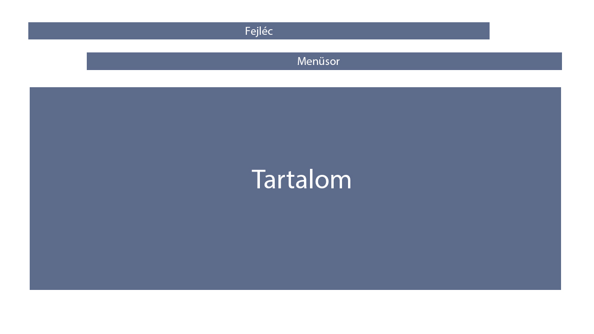

Portfólió - Sári Tamás Mihály
Koncepció
A legelső volt, hogy eltervezzem, milyen témában csináljam meg a portfólió oldalt. Ezt szerencsére sikerült hamar kitalálni, mert a fotózás téma elég kézenfekvő volt nekem, viszont nem vagyok olyan komoly szinten benne, hogy a saját képeimből tudjak egy összeállítást csinálni. Így ez az oldal úgynevezett koncepciós oldal, amiben megmutatom, hogy milyen lenne, ha valós szándékkal hoznám létre.
Layout
 Maga a layout elég egszerű, nincs túlkomplikálva. Egyszerűséget akartam kombinálni a letisztultsággal. Egy fejléc található az oldal tetején, majd jön egy menüsor, ahol lehet navigálni a különböző aloldalak között, ez utóbbi kettő minden oldalon megtalálható. Utána oldalspecifikus elemeket tartalmaznak a különböző oldalak. Ilyenek például a szövegrész vagy a képek.
Tervek és nehézségek
A feladat eleinte elég nehézkesen ment, mivel ez az első html programozásom, előtte sose csináltam ilyet és hirtelen kellett sok mindent elsajátítanom. Viszont a végére már elég jól belejöttem. Szerencsére az eredeti terveken nem nagyon kellett számottevően változtani, persze a projekt során kisebb változások adódtak, hiszen sok olyan megoldási mód van, amire kód írás közben jön rá az ember.
Felhasznált források: